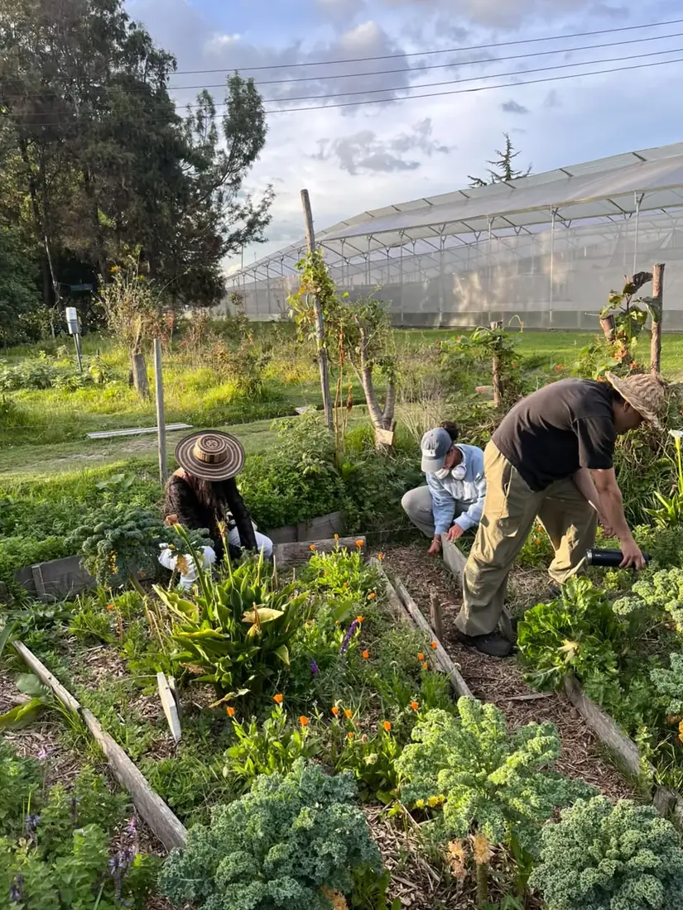
Proyecto comunitario
Cultivándonos
un aula viva para aprender y cuidar
Cultivo, alimentación y convivencia con otros seres como experiencias de aprendizaje.
Proyecto comunitario · La Chagra
Cultivándonos: un aula viva para aprender y cuidar
Una propuesta pedagógica, sensible y comunitaria: cada grupo sostiene viva una cama de cultivo durante el semestre, y cada persona lleva una bitácora de su vínculo con una planta.
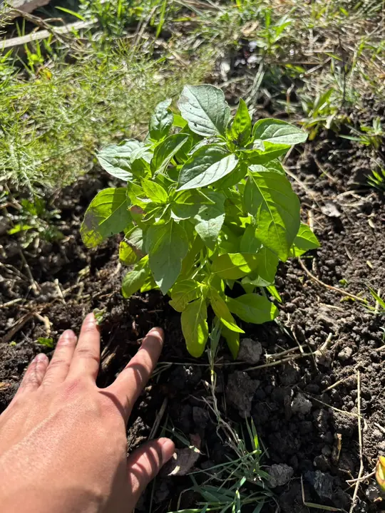
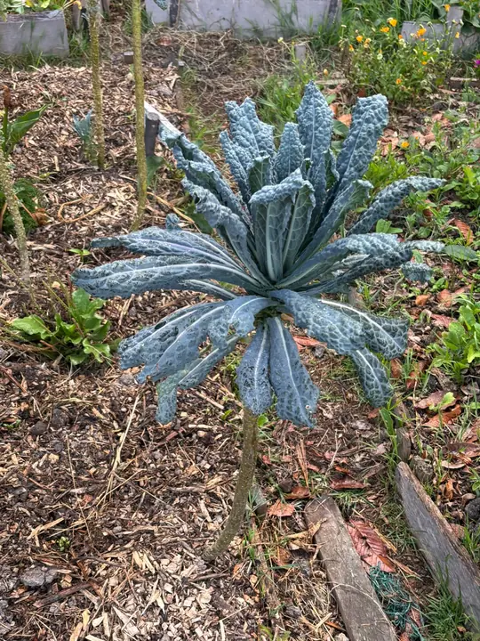
01 La presentación
usa las flechas, desliza o toca una hoja ↓

Proyecto comunitario
un aula viva para aprender y cuidar
Cultivo, alimentación y convivencia con otros seres como experiencias de aprendizaje.
Equipo
Un proyecto comunitario hecho entre muchas manos: cada persona sostiene una parte del proceso.
Valeria Stephania Gamba Camargo
Juan Pablo Prieto Vergara
Nicolás Cepeda Martínez
Manuela Rivera Gutiérrez
Sergio Quiroga Sandoval
Santiago Diaz Aroca
Neyler Corrales Lario
Jaime Alejandro Cuellar Gonzalez
Solangie Fernandez Rojas
Oscar Javier Martinez Zambrano
Daniela Andrea Blanco Forero
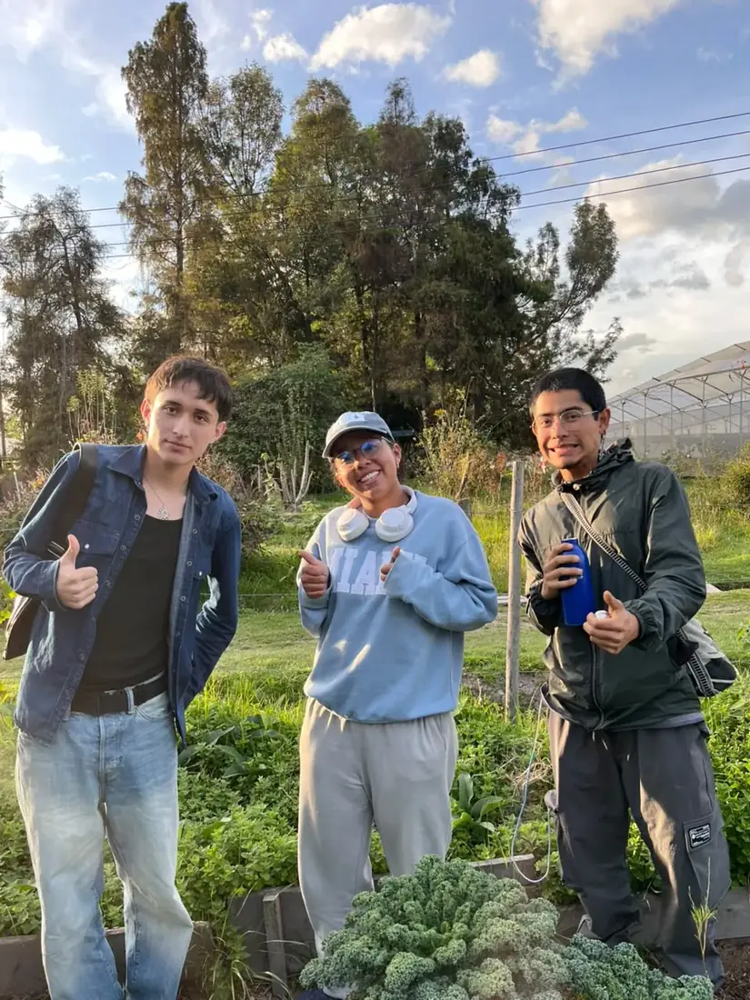
Punto de partida
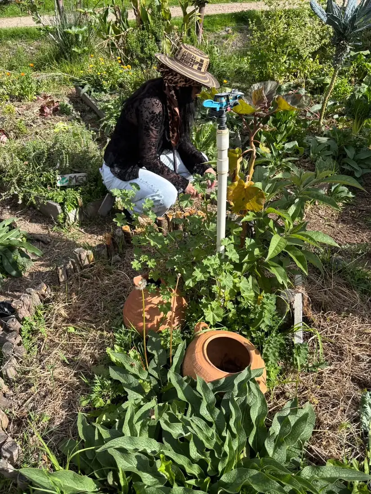
La propuesta
El aprendizaje surge del contacto directo con la tierra y del seguimiento cercano a los procesos de vida que allí se desarrollan.
La biología se aprende de forma amigable, observando y acompañando lo que crece.
El aula viva y la chagra se asumen como un territorio que se cuida entre todos.
La bitácora personal reúne dibujos, sensaciones y observaciones a lo largo del proceso.
Gobernanza
La chagra se organiza en camas de cultivo y combina alimentos, condimentos, plantas medicinales y flores.
El cuidado incluye limpiar, sembrar, alimentar, regar y cosechar con conciencia.
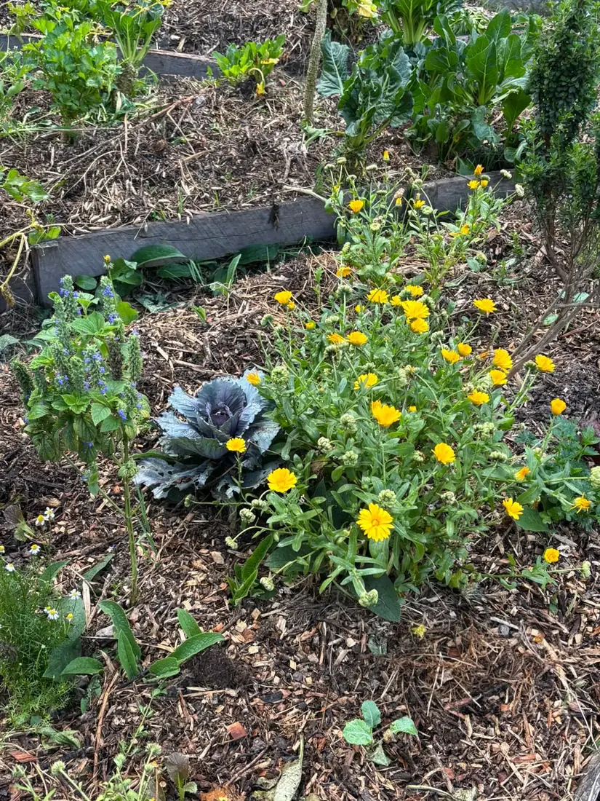
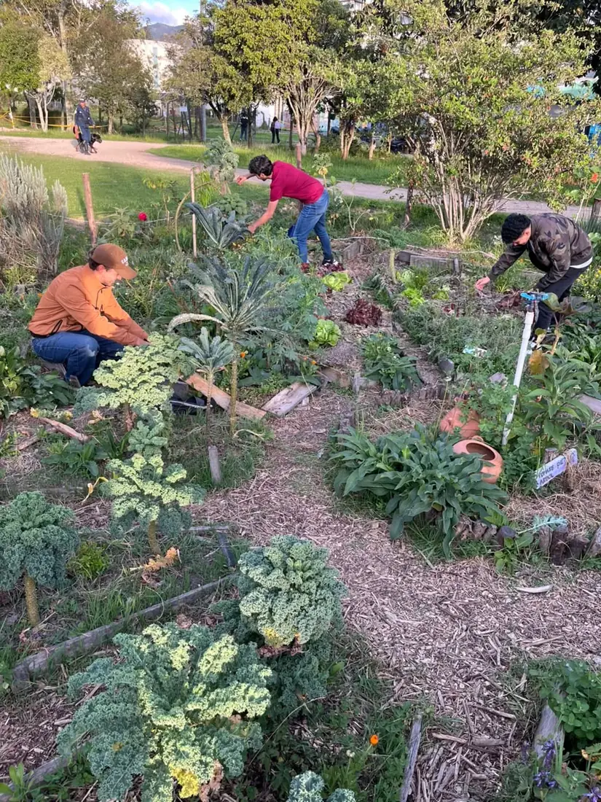
Responsabilidad compartida
Las camas y subcamas se asignan por grupos de trabajo: cada uno las mantiene vivas hasta la cosecha.
El agua se revisa y se reparte en cada visita a la chagra.
El abono y la materia orgánica del bosque alimentan la cama.
Deshierbe, abonado y observación semana a semana.
Sostener en el tiempo es parte del aprendizaje: la cama depende del grupo, no de una sola persona.
Especies cultivadas
El trabajo se centra en las plantas sembradas en el lugar: se conocen por el olor, la forma y el cuidado cotidiano.
OréganoAroma intenso, hojas pequeñas y generosas.
SalviaFlores moradas y olor profundo.
AlbahacaHojas suaves, aroma dulce y fresco.
Yerba buenaRastrera, fresca, se expande sola.
HinojoAlta y plumosa, aroma anisado.
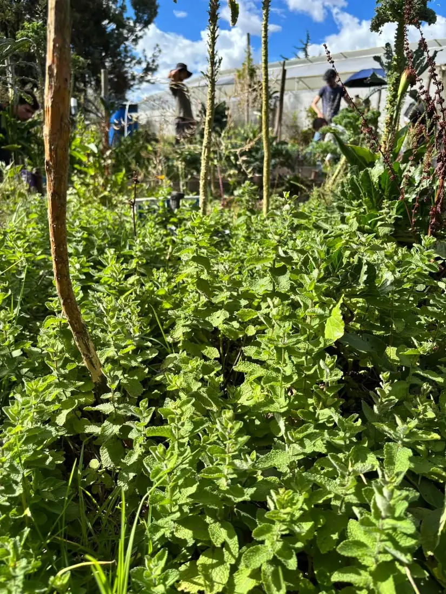
Cultura
Sembrar conserva y comparte saberes sobre semillas, alimentación y formas de cultivar.
La huerta también puede fortalecer la economía para la vida y los mingas comunitarios.
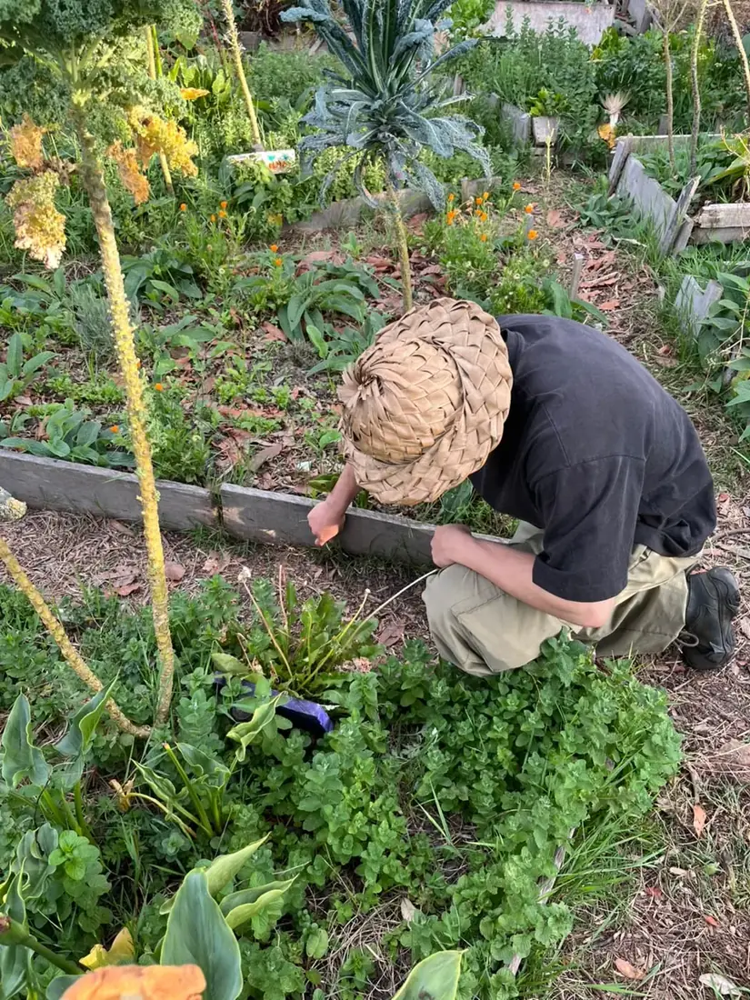
Comunidad y educación
Cada persona que habita el espacio puede hacerse responsable de una planta, desde la siembra hasta la cosecha.
La participación convierte el aula viva en una experiencia de colaboración y aprendizaje situado.
Bienestar compartido
Reconocer esa red de vida ayuda a comprender que el bienestar es compartido.
Personas que habitan y cuidan.
Grandes y pequeños.
Abejas, cochinillos, pájaros, lombrices, chiquitos y plantas.
Participación
Elegir una planta y conocer sus necesidades.
Sembrar y acompañar su crecimiento.
Cuidar el suelo, el agua y el entorno.
Cosechar y reconocer el aprendizaje compartido.
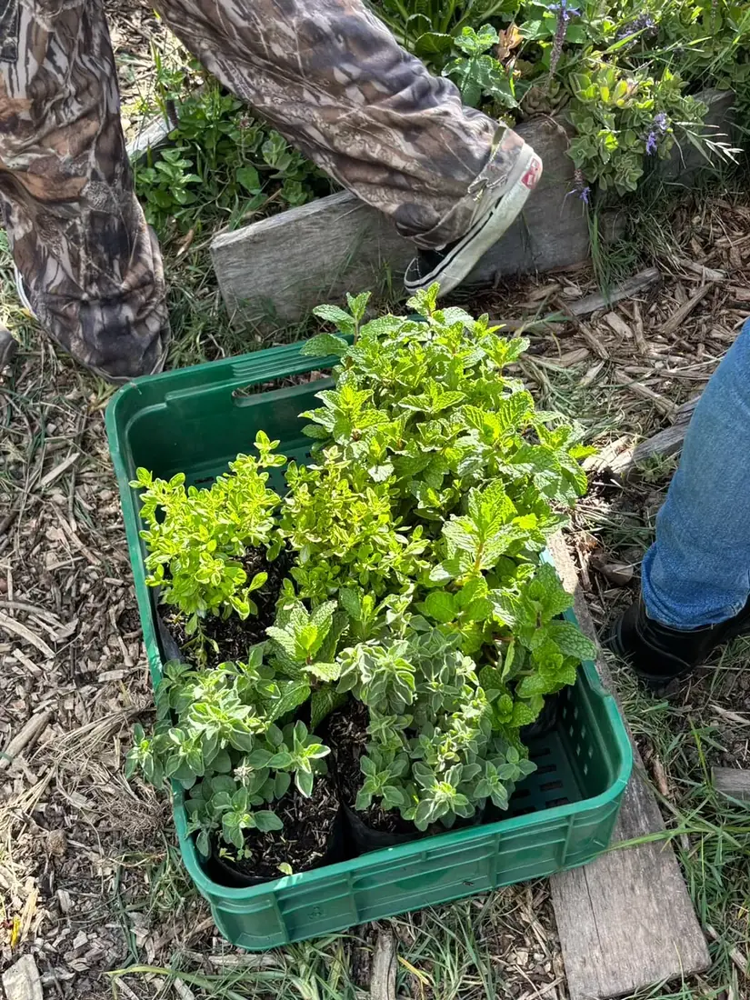
Observar para aprender
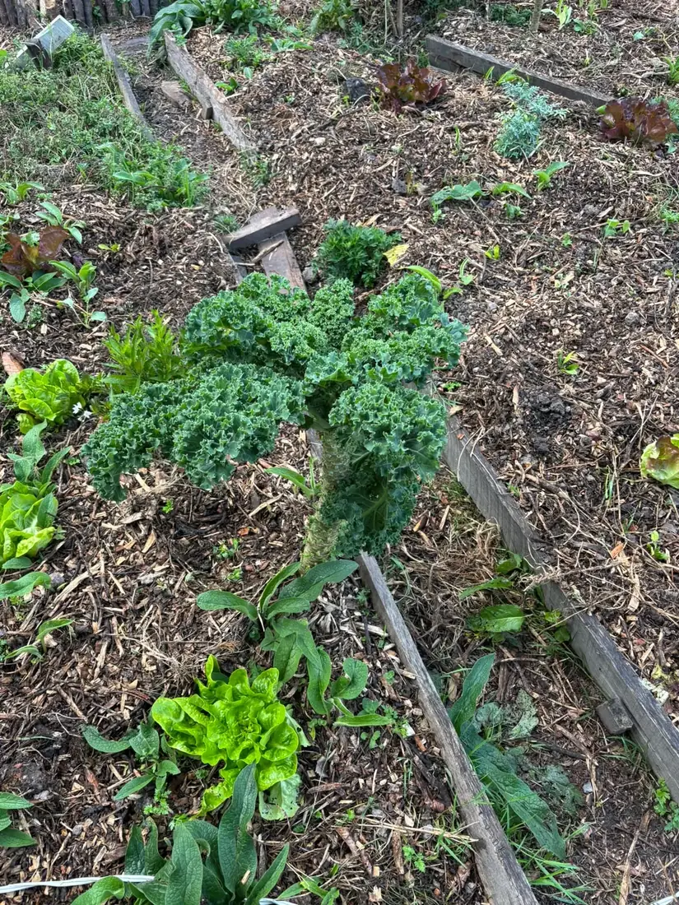
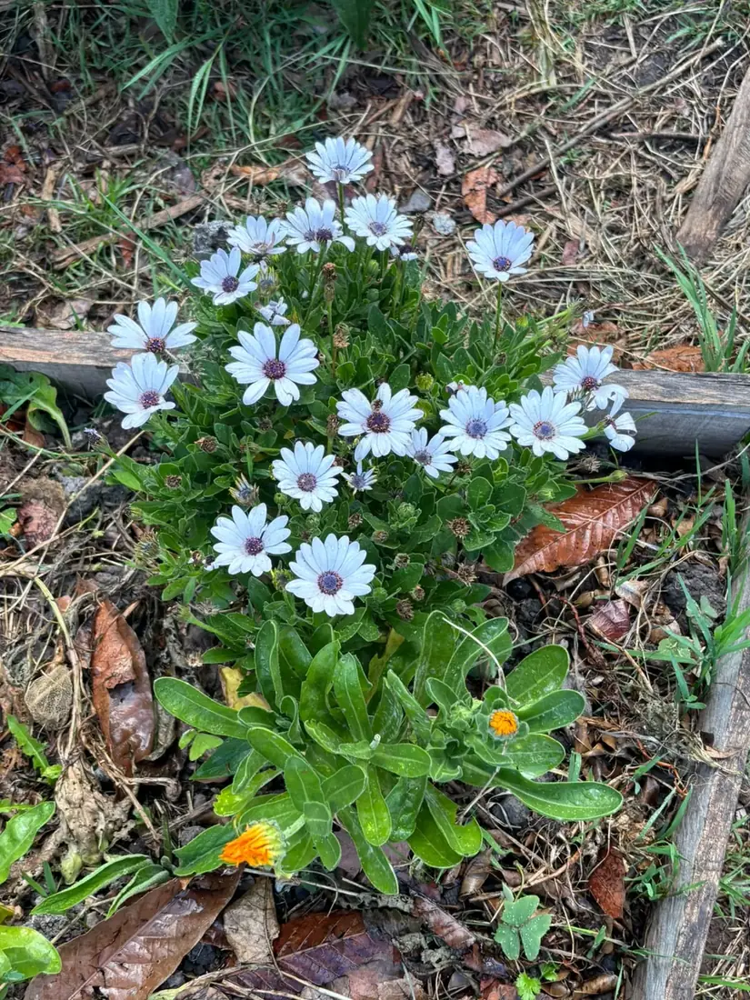
La huerta reúne variedades de hojas, flores, aromáticas y alimentos.
Observar sus formas, colores y texturas permite aprender desde la experiencia.
Reconocimiento
Nombrar las plantas ayuda a reconocerlas y a valorar su presencia en la huerta.
El cultivo se vuelve una oportunidad para relacionar alimentación, observación y responsabilidad.
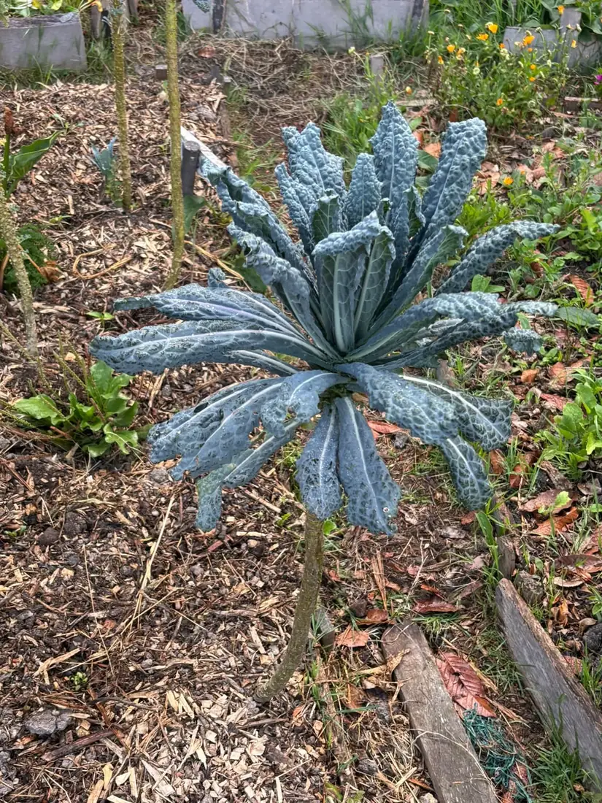
Ecosistema
Insectos y otros organismos hacen visible que el aula viva es un ecosistema.
La observación atenta permite comprender relaciones entre plantas, animales y cuidado.
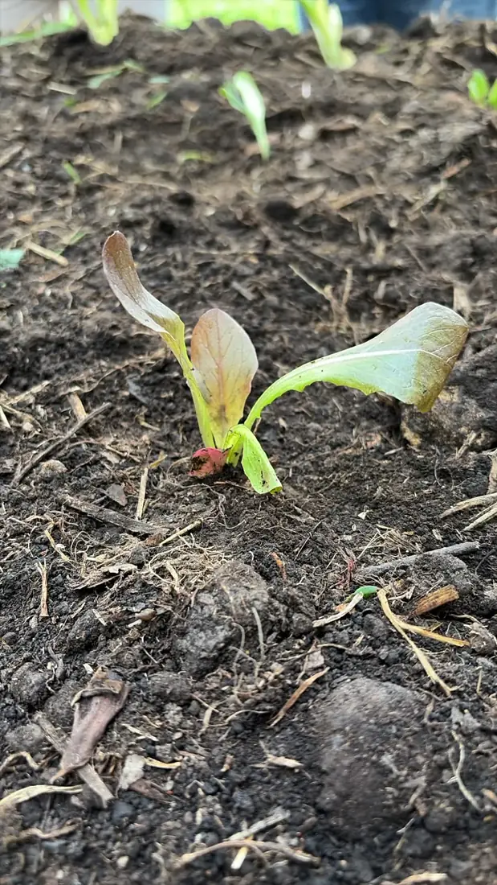
Metodología
La propuesta se organiza en tres momentos a lo largo del periodo académico.
Cada integrante elige una planta de su cama y comienza su registro personal.
Visitas periódicas de deshierbe, abonado y riego, con observación y registro.
Cosecha colectiva y bitácora consolidada como documento final del proceso.
Un mismo hilo: la bitácora personal atraviesa las tres fases y se convierte en el registro del vínculo con el espacio.
Fase 1
Cada integrante recorre su cama y elige una planta por afinidad, curiosidad o gusto personal.
Un dibujo a mano de la planta elegida.
Las sensaciones, emociones o motivos que llevaron a elegirla.
Sus características, sus partes y lo que necesita para crecer: luz, agua y suelo.
Fase 2
Los grupos asisten con regularidad a la chagra para las labores de mantenimiento y la observación de su planta.
Retirar lo que compite con el cultivo y dejar respirar la cama.
Aportar materia orgánica y mantener la nutrición del suelo.
Sostener la humedad sin exagerar: cada visita, una revisión.
Observación semanal en la bitácora, con dibujos y fotografías.
La constancia importa más que la cantidad: la cama se sostiene con visitas cortas y frecuentes.
Fase 3
Al finalizar el semestre se realiza la cosecha colectiva del material sembrado por los grupos.
Lo sembrado se recoge entre todos, como cierre del trabajo compartido.
Observaciones, ilustraciones y registros fotográficos de todo el semestre.
La libreta personal es el centro de la evaluación final del proceso.
Articulación
El sostenimiento del aula viva se realiza mediante la colaboración y el intercambio con los demás espacios.
Resultados esperados
Mantener en óptimas condiciones de nutrición y riego las camas y subcamas de la chagra hasta la cosecha.
Una libreta personal que refleje el aprendizaje biológico básico de las especies cuidadas y el vínculo con el espacio.
Aprender biología cuidando una planta: el resultado es a la vez una cosecha y un registro.
Cierre
Sembrar, cuidar y cosechar: aprender con otros seres y dejar registro de lo vivido.
02 El proyecto
Entendemos la siembra no solo como un ejercicio productivo, sino como una práctica colectiva en la que cada grupo asume la responsabilidad de mantener viva una cama a lo largo del semestre.
La propuesta articula la vivencia en el Aula Viva y la Chagra desde una perspectiva que integra el cuidado del territorio, el aprendizaje biológico amigable y la reflexión sensible.
A través del riego constante, la nutrición del suelo y la atención continua de los cultivos, el aprendizaje surge del contacto directo con la tierra y del seguimiento cercano a los procesos de vida que allí se desarrollan.
Tres momentos continuos a lo largo del periodo académico.
Con las camas asignadas, cada integrante recorre el espacio de su grupo y elige una planta por afinidad, curiosidad o gusto personal.
Los grupos asisten con regularidad a la chagra para el deshierbe, el abonado y el riego. En cada visita, o de manera semanal, cada persona dedica un espacio a observar su planta y registrarla en la bitácora.
Al finalizar el semestre se realiza la cosecha colectiva. La bitácora personal, consolidada con observaciones, ilustraciones y registros fotográficos, es el documento central de la evaluación final.
Un mismo hilo: la bitácora atraviesa las tres fases y se convierte en el registro del vínculo con el espacio.
03 Especies cultivadas
El trabajo se desarrolla con un grupo de plantas sembradas en el lugar, que permiten una interacción constante a través del olor, la forma y el cuidado cotidiano.
Aroma intenso, hojas pequeñas y generosas.
Flores moradas y olor profundo.
Hojas suaves, aroma dulce y fresco.
Rastrera, fresca, se expande sola.
Alta y plumosa, aroma anisado.
04 Articulación
El sostenimiento de la Chagra se realiza mediante la colaboración y el intercambio con los distintos espacios del Aula Viva.
05 Galería
Jornadas de trabajo, plantas que crecen y manos que cuidan. Toca una foto para verla en grande.
06 Equipo
Un proyecto comunitario hecho entre muchas manos: cada persona sostiene una parte del proceso.
Sembrar, cuidar y cosechar: aprender con otros seres y dejar registro de lo vivido.